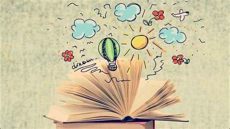

El origen y la evolución del lenguaje sigue siendo un tema no resuelto, basado en evidencias indirectas debido a que la capacidad lingüística no deja rastros claros en el registro fósil. A nuestro entender, el lenguaje evolucionó siguiendo distintos grados sucesivos. El punto de partida sería hace unos 2 millones de años, cuando los homínidos reunieron unas características biológicas y culturales que permitieron el salto a un nivel comunicativo cualitativamente superior.La lengua y literatura podemos reconocerla como un estudio del lenguaje orientado más al lenguaje literario como el modo de empleo de la lengua común y cotidiana que se hace en las obras de la literatura como lo son la poesía, la narrativa, y la dramaturgia, asi como en otras formas de discurso como la oratoria ya que es un lenguaje especial que da más importancia a la manera de trasmitir el mensaje que al mensaje es sí mismo mientras persigue, entre otras cosas, un estándar de belleza artística.
Poesía
La poesía es un género literario escrito en verso o prosa que se caracteriza por expresar ideas, sentimientos e historias de un modo estético y bello. Se vale de recursos poéticos con los que expande las fronteras del lenguaje. Se reconocen las dotes y el talento de los escritores de poesía por las sutiles elecciones de palabras y el uso de metáforas y rimas que brindan musicalidad a las obras. Las grandes culturas antiguas desarrollaron estilos poéticos distintos y particulares, como los haikus en Japón o la oda en Grecia, que solían estar escritos en verso y daban importancia al uso de la métrica o la rima.
Características de la poesía:
-Es un género literario.
-Se puede escribir en verso o en prosa.
-Se vale de recursos poéticos.
-Trata sobre cualquier tema.
-Puede prestarse a múltiples interpretaciones.
-Se manifiesta en el poema.
-Puede tener una métrica y rima.
-Fue variando a lo largo del tiempo.
-Se vale de descripciones subjetivas.
Tipos de poesías:
Según su contenido, la poesía se clasifica en:
-Poesía épica: Narra acontecimientos pasados, reales o no, relativos a hazañas de héroes, algunos de sus subgéneros son los cantares de gesta o epopeyas. Por ejemplo: La Eneida, de Virgilio o La Odisea, de Homero.
-Poesía lírica: Expresa reflexiones o sentimientos profundos. En la antigüedad, los poemas solían ser recitados acompañados de la lira (instrumento de cuerda). Por ejemplo: Oda a Afrodita, de Safo.
-Poesía dramática: Narra acontecimientos e incluye la interacción de los personajes mediante el uso de diálogos. Por ejemplo: La Divina Comedia, de Dante Alighieri.


La entrevista
Una entrevista es un intercambio de ideas u opiniones mediante una conversación que se da entre dos o más personas. Todos las personas presentes en una entrevista dialogan sobre una cuestión determinada. Dentro de una entrevista se pueden diferenciar dos roles:
-Entrevistador: Cumple la función de dirigir la entrevista y plantea el tema a tratar haciendo preguntas. A su vez, da inicio y cierre a la entrevista.
-Entrevistado: Es aquel que se expone de manera voluntaria al interrogatorio del entrevistador.
Existen entrevistas laborales, periodísticas o clínicas. Todas son recíprocas, es decir, en ella el entrevistador plantea un interrogatorio estructurado o una conversación totalmente libre con el entrevistado.
Entrevista estructurada
Una entrevista formal y estructurada se caracteriza por estar planteada de una manera estandarizada; en ella se hacen preguntas que previamente fueron pensadas y que se dirigen a un entrevistado en particular que responde concretamente lo que se le está preguntando.
Por esta razón, el entrevistador tiene una libertad limitada a la hora de formular las preguntas, ya que estas no pueden nacer de la entrevista en sí misma, sino de un cuestionario realizado de ante mano.
Entre sus ventajas se encuentran:
La información es fácil de interpretar, lo que favorece el análisis comparativo.
El entrevistador no requiere mucha experiencia en la técnica, ya que sigue el cronograma de preguntas.
Sus desventajas pueden ser:
Esta técnica posee limitaciones a la hora de profundizar en un tema que surja en la entrevista ya que se atiene a un cuestionario predeterminado, lo que no permite que el diálogo fluya naturalmente.


El ensayo
Un ensayo es un tipo de texto escrito en prosa en el cual un autor expone, analiza y examina, con variados argumentos, un tema determinado, con el propósito de fijar posición al respecto, siguiendo un estilo argumentativo propio. En este sentido, el ensayo se caracteriza por ser una propuesta de reflexión, análisis y valoración que se estructura de manera clásica con una introducción, un desarrollo y una conclusión. Un ensayo también puede ser la prueba o experiencia que se hace de una actividad o tarea para perfeccionar su ejecución o para comprobar una hipótesis. La palabra ensayo proviene del latín exagĭum, que significa "peso" o "acto de pesar algo". De allí que también haga referencia a la tarea de precisar la proporción y peso de metales que hay en el mineral metalífero tal como es extraído antes de ser limpiado.
Características de un ensayo
-Ofrece libertad en la elección del tema, el enfoque y el estilo.
-Su extensión varía según el tipo de ensayo. Sin embargo, suelen ser más breves que un trabajo de investigación.
-Son expositivos debido a que en ellos es necesario que haya una explicación clara y concisa de las ideas que lo motivan.
-Son argumentativos en el sentido de que esgrimen razones que evidencian la probidad de las hipótesis que maneja el autor.
-Son reflexivos en tanto no pretenden ofrecer resultados concluyentes, sino aportar elementos para la reflexión sobre un tema.
-Tiene como propósito la demarcación de un punto de vista particular.
-Aunque tiene una estructura básica, puede adaptarse a las necesidades del ensayista.
-El análisis puede partir tanto del método inductivo como del deductivo, esto es, de lo particular a lo general, o de lo general a lo particular.
Partes de un ensayo
-Introducción: se refiere a la sección inicial del texto, en la cual se anuncia el tema a tratar así como las motivaciones del autor.
-Desarrollo: corresponde a la exposición pormenorizada de los argumentos, las referencias, el análisis y la reflexión crítica sobre el asunto abordado.
-Conclusión: tras la deliberación hecha en el desarrollo, el autor expone las conclusiones a las cuales llegó, definiendo y validando su punto de vista.